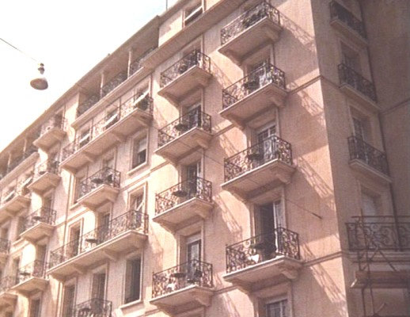
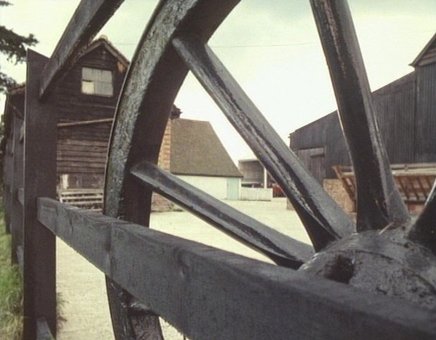
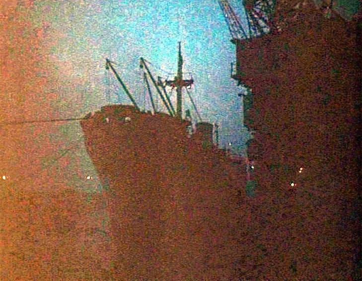
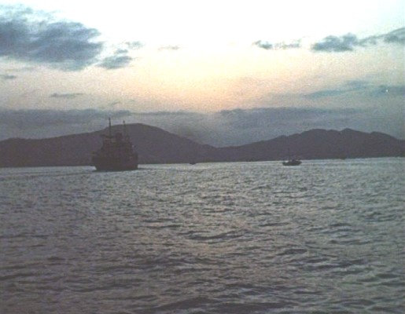
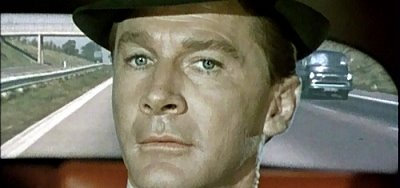
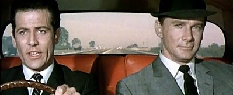
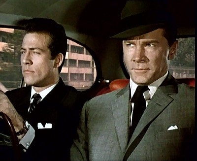
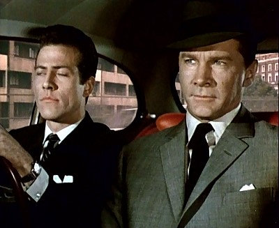
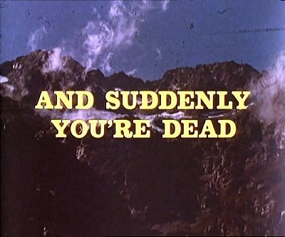
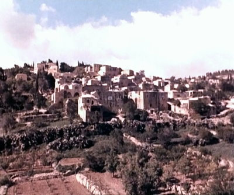

|
|
HELP FIND THE FOLLOWING LOCATIONS
PAGE 8THE BARON: Night of the Hunter (Roy Baker: July 1966)
Unknown 1 - When Daniella goes into the hotel to meet Mannering she is seen by the Colonel’s men.

Unknown 2 - Madame Nicharos and Nicholas leave the farm in a jeep to begin their dive to the port.

Unknown 3 - Madame Nicharos arrives with Nicholas at the port.

Unknown 4 - The ship with Madame Nicharos aboard leaves port.

THE BARON: Diplomatic Immunity (Leslie Norman: August 1965)
C22: M1 Junction 8 - Marlowe is driving John Mannering from the airport in the Jensen. They discuss the stolen Faberge item and discover it has not been insured.


Gloucester Terrace, London W2 – Marlowe is driving John Mannering back to London and notices that they are being followed by another car.


THE BARON: And Suddenly You're Dead (Cyril Frankel: January 1966)
Unknown 1 – John Mannering and Cordelia Winfield are in Switzerland on business.

THE BARON: The Long, Long Day (Roy Baker: April 1966)
Kirjath-Jearim (Deir el-Azar), Jerusalem district, Israel - The Santa Moneta – where Maria Pullerno is hiding.
(Identified by Sietse Postma, March 2025)

Think you know a spot? Need a bigger image? Email me.
< Previous | Index | Avengerland | Next >
Copyright © 2022 Anthony R. McKay